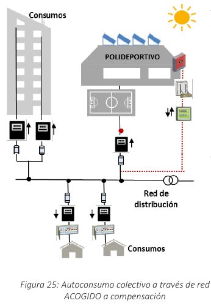

Mecanismo de compensación de excedentes
(fuente: Guía profesional de tramitación del autoconsumo .-Anexo IV: Ejemplos)
Introduccion
Introduccion
En este anexo se presentan ejemplos de varias configuraciones de instalaciones de autoconsumo tanto individual como colectivo a las que se aplica el mecanismo de compensación de excedentes, mostrando el funcionamiento del mecanismo de compensación para ilustrar los ahorros que podrían conseguirse con su aplicación. Debe tener en cuenta que los ejemplos se realizan con la estructura actual de la tarifa eléctrica y aplicando los peajes y cargos existentes en este momento. [ Actualmente se está revisando el REBT, en particular lo referente a las ITC-BT-12 e ITC-BT-40 para adaptarloa los requisitos de autoconsumo. Los ejemplos que se muestran en esta Guía se realizan únicamente a efectosdemostrativos sin perjuicio de los esquemas que finalmente sean aprobados.]
D.1 Autoconsumo individual CON excedentes y CON compensación, conectada en RED INTERIOR
"D.1 Autoconsumo individual CON excedentes y CON compensación, conectada en RED INTERIOR"
En esta configuración existe un único consumidor asociado a la instalación en autoconsumo que, mientras tenga demanda, utilizará toda la energía producida por la instalación (fotovoltaica en el ejemplo) en cada momento.
Existirán dos sujetos: productor y consumidor que podrán ser personas físicas o jurídicas diferentes. Será necesario firmar un contrato de compensación de excedentes y comunicarlo a la compañía distribuidora, aunque el productor y el consumidor sean la misma persona física o jurídica. El propietario de la instalación, podrá ser una persona física o jurídica diferente del productor y del consumidor. En aquellos momentos en que no precise utilizar toda la energía producida por la instalación de autoconsumo, los excedentes se volcarán a la red de distribución/transporte y se compensarán al final del mes.

Documentación necesaria
Contrato Compensación Excedentes:
PRODUCTOR – CONSUMIDOR 1
Comunicación de modalidad de autoconsumo y envío Contrato de Compensación Excedentes:
CONSUMIDOR 1 - DISTRIBUIDORA/COMERCIALIZADORA
¿Cómo funciona la compensación?
En ciertas horas, cuando su consumo coincida con la generación fotovoltaica, el consumidor no necesitará comprar energía a la red de forma que utilizará toda la energía generada por su instalación de autoconsumo. En otras horas, cuando su consumo sea inferior a la energía generada (ENG h) la energía sobrante se volcará a la red como excedente, y habrá horas en que su consumo sea superior a la generación y por tanto deba comprar energía de la red. A final del periodo de facturación, la distribuidora leerá el contador de suministro, que será bidireccional y que por tanto registrará tanto la energía consumida de la red como la energía excedentaria vertida a la red. La distribuidora proporcionará a la comercializadora (CoR o libre) toda la información de lectura necesaria para realizar la facturación y la compensación. A la hora de realizar la facturación la comercializadora calculará el valor de la energía comprada a la red (valorada a precio PVPC o a precio de mercado libre según el contrato de suministro que tenga el consumidor), y le restará el valor de la energía vertida a la red como excedente (a precio de mercado menos los desvíos o al precio acordado con la comercializadora también según sea el contrato de suministro del consumidor).
Ejemplo del ahorro alcanzable
Es posible simular los ahorros que podrían alcanzarse con una instalación en autoconsumo en esta configuración individual CON excedentes y CON compensación conectada en red interior. Por simplificación se supone que el usuario tiene un contrato de suministro con una comercializadora de referencia (CoR) con tarifa 2.0A a precio PVPC, de manera que los precios utilizados en la simulación corresponden a medias horarias ponderadas del PVPC. En este ejemplo el precio medio PVPC asciende a 113,965 €/MWh (donde 69,37 €/MWh son el coste de energía y 44,03 €/MWh el peaje de acceso). Los valores del PVPC para cada hora pueden consultarse en la página web de Red Eléctrica de España (REE). Así, aplicando el mecanismo del artículo 14 del RD244/2019, al tener el contrato de suministro a PVPC, los excedentes de este consumidor se valorarán al precio del mercado menos los desvíos. Tomaremos un valor medio de 52 €/MWh para el mercado y 50 €/MWh para los excedentes. En esta simulación se supone también que el consumidor utiliza parte de la energía generada por la instalación fotovoltaica (FV), pero no es capaz de adaptar por completo su demanda con la curva de generación solar y por ello, solo consigue que el 30% de su consumo proceda de la fotovoltaica. Es decir, su coeficiente de simultaneidad entre su consumo y la generación será del 30%; por tanto, en algunas horas se generan excedentes ya que el consumidor no es capaz de aprovechar la totalidad de esa energía generada. Por último conviene recordar que al realizar la compensación de los excedentes, la cuantía a descontar nunca podrá superar el valor económico de la energía consumida de la red.
En el ejemplo, el consumidor 1 antes de instalar su instalación de autoconsumo recibirá mensualmente una factura eléctrica como la siguiente:
Si este consumidor decide instalar una instalación de autoconsumo CON excedentes y acogerse a compensación, podemos realizar un análisis horario de sus consumos, autoconsumos y generación de excedentes, que será de la siguiente forma:

El encargado de la lectura realiza en cada hora un saldo neto horario entre los consumos de red y los excedentes, de manera que en una hora solo podrá haber excedentes o consumo de red, independientemente de los flujos reales de energía que se hayan producido en esa hora. Es decir, si la suma de excedentes en esa hora supera a la suma de los consumos, se asignará a esa hora el saldo neto excedentario, mientras que si los consumos de red superan a los excedentes en esa hora se asignará el saldo neto consumidor de red. Este proceso se repetirá para todas las horas, de forma que al finalizar el periodo de facturación (máximo 1 mes) se realizará la compensación de consumos de red y excedentes a los precios que sean aplicables según el contrato del consumidor, y se generará una factura como la siguiente:
En el ejemplo, se ha supuesto que al final del periodo de facturación, el consumidor ha reducido su consumo de la red desde los 400 kWh iniciales a solo 280 kWh ya que ha consumido el resto (120kWh) de la instalación de autoconsumo. Esos 280 kWh se pagan a precio PVPC. Por otro lado, se han generado 380 kWh de excedentes en ese mismo periodo, que se compensan al precio descrito para excedentes. Nótese que el valor de la compensación (19,00 €) no podría superar el valor del coste de la energía comprada en el mismo periodo (19,32 €). En este caso la “cuantía por uso de red próxima” no sería de aplicación ya que se trata de una instalación conectada en red interior. [ En virtud del artículo 17.5 del RD 244/2019, la CMNC determinará la cuantía por la utilización de la red que deban satisfacer los consumidores, en el caso en que se produzca transferencia de energía a través de la red de distribución en instalaciones próximas a efectos de autoconsumo] El ahorro en la factura eléctrica con autoconsumo (41,79 €) respecto de la factura sin instalación de autoconsumo (83,21 €) alcanza el 50%.
Si en lugar de optar por acogerse al mecanismo de compensación, este mismo consumidor con la misma instalación de autoconsumo decidiese cambiar de modalidad y pasar a una instalación CON excedentes pero NO ACOGIDA a compensación, es decir, a vender los excedentes en el mercado, también se pueden simular los ahorros alcanzables
Por un lado, el consumidor recibe una factura eléctrica con menor consumo de la red ya que, siguiendo el ejemplo anterior reduce la compra de energía a 280 kWh (autoconsume los mismos 120 kWh) que antes. Como ya no tiene compensación, no se le descuenta el valor de los 380 kW de excedentes y tampoco le aplica el término referente a la cuantía.
Por otro lado, el productor venderá esos excedentes (380 kWh) al mercado a través de un representante y se obtendrá por ellos el precio del mercado horario que corresponda (52€/kWh en el ejemplo) y por esos servicios de representación se abonará un importe según el contrato. Además el productor deberá hacerse cargo de las obligaciones fiscales/tributarias que le apliquen como el pago del IVPEE del 7% sobre el valor de la energía producida y los costes por retribución del operador del sistema (OS), que se aplicarán sobre los 380kWh vendidos.
En este caso, si el consumidor y el productor son la misma persona, por un lado se abonará la factura de consumo una vez tomado en cuenta el valor de la compensación de los excedentes (1.) y por otro lado se recibirá el importe de la venta (2.). A esa venta habrá que restarle los costes ocasionados por la actividad de venta en el mercado (3. y 4.) Así, el ahorro neto que se obtiene al introducir la instalación en autoconsumo alcanza el 47% si lo comparamos con la factura eléctrica original sin instalación de autoconsumo (83,21€).
A tener en cuenta
Para lograr el máximo ahorro en el término variable de la factura es necesario que la instalación de autoconsumo se dimensione adecuadamente, de forma que sea capaz de cubrir las necesidades del consumidor. En el ejemplo, el consumidor tiene un consumo de 400 kWh y la instalación se dimensiona para que produzca por encima de esa cantidad hasta 500 kWh. Pero es aún más importante que el consumidor adapte su demanda a la curva de producción de la instalación generadora, de manera que maximice el autoconsumo instantáneo de la energía FV y por tanto genere los mínimos excedentes posibles.
En el ejemplo, el consumidor realmente sólo es capaz de autoconsumir el 30% de sus necesidades de consumo. Si por el contrario el consumidor fuese capaz de modificar su perfil de demanda (por ejemplo cambiando hábitos de consumo y desplazando su consumo a los momentos de mayor generación fotovoltaica) el ahorro sería mucho mayor; si la energía autoconsumida fuera el total de la producción FV (500 kWh), tendríamos el máximo ahorro en la factura (más del 60%).
Recuerde que el productor y el consumidor pueden ser personas físicas o jurídicas diferentes y que, en caso de que se opte por la venta al mercado de los excedentes, será el productor quien recibirá los ingresos de la venta y quien deberá hacerse cargo de los costes y obligaciones que acompañen a dicha venta.
Autoconsumo colectivo CON o SIN excedentes y CON compensación, con todos los consumidores conectados en RED INTERIOR
D.2 "Autoconsumo colectivo CON o SIN excedentes y CON compensación, con todos los consumidores conectados en RED INTERIOR"
En esta configuración existen varios consumidores asociados. La conexión se realiza en la red interior, aguas arriba del contador de suministro de cada consumidor. En esta conexión se respetan las limitaciones para edificios sujetos a la LPH, puesto que la instalación se conecta en red interior pero no directamente a los consumidores. En la modalidad CON excedentes existirán dos sujetos: productor y consumidores, que podrán ser personas físicas o jurídicas diferentes. En la modalidad SIN excedentes no existe productor. La instalación de autoconsumo (FV en el ejemplo) dispone de un contador bidireccional de generación neta. Cada consumidor asociado dispone únicamente de un contador, que será el de suministro, que registrará la medida de toda la energía que llega a cada consumidor. En la modalidad SIN excedentes existe un sistema antivertido, que impide la cesión de energía a la red.
Para poder acogerse a compensación la instalación de generación debe ser renovable y de P≤100 kW. Además, los consumos de servicios auxiliares deberán ser despreciables por lo que deberán cumplirse las tres condiciones del artículo 3j) del RD244/2019.
Documentación necesaria
Al ser una instalación de autoconsumo colectivo, es necesario que los consumidores asociados firmen un acuerdo con los criterios de reparto de la energía en función de las (ß) que se acuerden. Adicionalmente, al querer acogerse a compensación, será necesario firmar un contrato de compensación simplificada entre productor y consumidores o un acuerdo de compensación simplificada entre los consumidores, según sea CON o SIN excedentes, que contenga el mismo acuerdo de reparto de la energía anterior. Ambos documentos deben remitirse a la compañía distribuidora de forma individual por cada consumidor y se le comunicará la modalidad de autoconsumo elegida.

¿Cómo funciona la compensación?
A final de mes, la distribuidora leerá el contador de generación neta horaria de la instalación de autoconsumo (ENGh) y proporcionará a la comercializadora toda la información necesaria para realizar la facturación y la compensación. La comercializadora se encargará de realizar la facturación y la compensación de los excedentes a cada consumidor individualmente, a partir de esa información y lo hará para cada hora dentro del periodo de facturación. Así para cada hora, la distribuidora:
- Asigna la energía generada por la FV a cada consumidor en función de las ß fijas comunicadas: \(ENG_{h,i} = ß_i * ENG_h\).
- Compara la energía horaria individualizada \(ENG_{h,i}\) que le corresponde a cada usuario con la lectura horaria de su contador individual de suministro (energía horaria consumida individualizada). Si la energía horaria consumida individualizada (en esa hora) es superior a la \(ENG_{h,i}\) entonces el autoconsumo horario individualizado (\(Eaut_{h,i}\)) será la \(ENG_{h,i}\). Con ello, lo que factura por energía consumida de la red (en esa hora) será la lectura horaria del contador menos \(ENG_{h,i}\). Si la energía horaria consumida individualizada es inferior a la \(ENG_{h,i}\) entonces lo que factura por energía de red (en esa hora) será 0 kWh, según se detalla en el Anexo I del RD 244/2019.
- En las horas en las que no se consume toda la energía generada individualizada \(ENG_{h,i}\) se generarán excedentes que serían susceptibles de ser compensados.
A final de mes tendremos un cierto consumo de red para cada consumidor, ya que habrá horas en que \(ENG_{h,i}\) no cubra el consumo horario individualizado. Todos los consumos horarios se suman. Por otro lado se habrán generado excedentes, ya que habrá horas en que \(ENG_{h,i}\) es mayor que el consumo horario individualizado, de manera que todos los excedentes horarios se valoran a su correspondiente precio horario y su valor se suma. Los excedentes totales de cada consumidor asociado se compensarán en su factura de consumo eléctrico, al final del periodo de facturación.
Ejemplo del ahorro alcanzable
Es posible simular los ahorros que podrían alcanzarse con una instalación en autoconsumo en una configuración colectiva SIN excedentes y CON compensación con todos los usuarios conectados en RED INTERIOR. Por simplificación se supone que existen dos usuarios y que ambos tienen un contrato de suministro con una comercializadora de referencia a PVPC, de manera que los precios utilizados en la simulación corresponden a medias horarias ponderadas del PVPC. En el ejemplo se utiliza el mismo el precio medio PVPC del apartado anterior de 113,39 €/MWh (incluido peaje). Al suponer que ambos consumidores tienen contratado el suministro con una comercializadora de referencia, el RD 244/2019 marca el precio al que deben ser valorados los excedentes que será el precio medio del mercado diario e intradiario menos los desvíos. En el ejemplo tomamos para este valor una cifra de 50 €/MWh. Para el reparto de energía entre los consumidores asociados, se asignan los mismos ß para ambos consumidores, ya que se ha supuesto que el criterio de reparto se realiza siguiendo la propuesta del Anexo I del RD 244/2019 y que ambos consumidores tienen la misma potencia contratada (5,75 kW), pero los ß podrían ser distintos si los consumidores acuerdan coeficientes distintos. En el ejemplo, los consumidores 1 y 2 antes de instalar su instalación de autoconsumo recibirán mensualmente sendas facturas eléctricas como las siguientes:


En este ejemplo, los consumidores deciden instalar una instalación de autoconsumo SIN excedentes (dotada de un sistema antivertido) y acogerse a compensación. Suponemos además que ambos consumidores tienen la misma potencia contratada y acuerdan el coeficiente ß = 0,50. Al tratarse de una instalación SIN excedentes, la producción se adaptará a los consumos existentes en cada momento, ya que nunca puede volcarse energía a la red.

Al igual que en el ejemplo anterior, podemos realizar un análisis horario de los consumos, autoconsumos y generación de excedentes, que será de la siguiente forma:

Este proceso se repetirá para todas las horas, de forma que al finalizar el periodo de facturación se realizará la compensación de consumos de red y excedentes a los precios que sean aplicables según el contrato de cada consumidor, y se recibirán unas facturas como las siguientes:
A tener en cuenta
La instalación generadora debe estar ajustada para que su generación pueda cubrir los consumos totales de los consumidores asociados. En este caso, al tratarse de una instalación SIN excedentes, el dimensionamiento adecuado toma mayor importancia, puesto que la generación se adaptará al consumo por existir un mecanismo anti-vertido, de manera que si no hay consumo no habrá generación. La generación en cada hora será como máximo el consumo total de los consumidores conectados aguas abajo de la generación, ya que es posible que en algún momento de esa hora la generación no sea capaz de suministrar la energía demandada. Lo ideal es que los consumidores acomoden su demanda a la generación FV, de manera que se maximice el autoconsumo, puesto que es ahí donde se encuentra el ahorro más importante de la factura. Cuanto más consumo horario se case con la generación horaria FV, mayor será el ahorro. En este ejemplo el consumidor 1 consigue un ahorro del 38%, frente a un ahorro del 29% del consumidor 2, debido a su mejor gestión de la demanda (maximizando el autoconsumo) lo que implica menores excedentes.
Autoconsumo colectivo CON excedentes y CON compensación, A TRAVÉS DE RED con al menos un consumidor conectado en RED INTERIOR
D.3 "Autoconsumo colectivo CON excedentes y CON compensación, A TRAVÉS DE RED con al menos un consumidor conectado en RED INTERIOR"
En esta configuración existen varios consumidores asociados que se conectan a la instalación a través de la red de distribución. Sin embargo, la instalación generadora se conecta a la red interior (que incluye las instalaciones de enlace) de, como mínimo, uno de los consumidores asociados. Al ser modalidad CON excedentes, existirán dos sujetos: productor y consumidores, que podrán ser personas físicas o jurídicas diferentes. La instalación de autoconsumo (FV en el ejemplo) dispone de un contador bidireccional de generación neta. Cada consumidor asociado dispone únicamente de un contador, que será el de suministro, que registrará la medida de toda la energía que llega a cada consumidor. Al tratarse de un autoconsumo colectivo, los consumidores asociados deberán acordar el criterio de reparto de la energía que se genere y firmar el correspondiente “acuerdo de reparto” donde figure el coeficiente β que le corresponde para cada consumidor. Este acuerdo se remitirá a la distribuidora.

Esta configuración representa un autoconsumo colectivo donde la instalación generadora se ubica en un edificio (polideportivo en el ejemplo), y se conecta en su red interior. Los consumidores asociados se ubican en las cercanías, cumpliendo los criterios de distancia que establece el RD244/2019 para los autoconsumos a través de red. Además, esta configuración permite que los consumidores se acojan al mecanismo de compensación simplificada ya que se pueden cumplir las condiciones descritas en el RD244/2019:
-
La fuente de energía primaria es renovable: en el ejemplo se cumple al tratarse de generación fotovoltaica.
-
La potencia total no sea superior a 100 kW.
-
El consumidor y productor asociado hayan suscrito un contrato de compensación de excedentes de autoconsumo.
-
La instalación de producción no tenga otorgado un régimen retributivo adicional o específico.
-
Si resultase necesario realizar un contrato de suministro para servicios auxiliares de producción, el consumidor haya suscrito un único contrato de suministro para el consumo asociado y para los consumos auxiliares de producción con una empresa comercializadora, según lo dispuesto en el artículo 9.2 del presente real decreto. En el ejemplo, al tratarse de una instalación fotovoltaica los consumos por servicios auxiliares podrían ser considerados despreciables, no siendo necesario formalizar el contrato de suministro para dichos servicios auxiliares y por tanto, cumpliéndose este apartado.
Para que los consumos auxiliares se puedan considerar despreciables, deberán cumplirse tres condiciones a la vez que aparecen descritas en el artículo 3j) del RD244/2019:
- Sean instalaciones próximas de red interior. En la configuración de nuestro ejemplo, esta condición se cumpliría dado que la instalación se encuentra conectada a la red interior de uno de los consumidores asociados (el polideportivo del ejemplo). Como la generación está conectada a la red interior de al menos uno de los consumidores asociados, se entenderá cumplido el primero de los requisitos para considerar despreciables los servicios auxiliares de producción. Esta interpretación viene refrendada por las preguntas frecuentes (FAQ) publicadas por el Ministerio para la Transición Ecológica y el Reto Demográfico sobre autoconsumo que pueden consultarse en su página web
- Se trate de instalaciones de generación con tecnología renovable destinadas a para suministrar a uno o más consumidores acogidos a cualquiera de las modalidades de autoconsumo y su potencia instalada sea menor de 100 kW. Esta condición se cumpliría para cualquier instalación renovable (FV en el ejemplo) con la potencia inferior a 100kW.
- En cómputo anual, la energía consumida por dichos servicios auxiliares de producción sea inferior al 1 % de la energía neta generada por la instalación. Esta condición se cumpliría para nuestro ejemplo, ya que las instalaciones fotovoltaicas, en líneas generales, presentan consumos auxiliares inferiores a este 1%.
Estas configuraciones de autoconsumo colectivo a través de red acogidas a compensación resultan especialmente interesantes para aplicaciones de índole social en ayuntamientos y entidades públicas/privadas como mecanismos de lucha contra la pobreza energética.
Permiten utilizar espacios que teniendo gran superficie de tejado disponible, pueden compartir la generación con otros consumidores que, por ejemplo, no dispusiesen de tejado adecuado o estuviesen en situación de pobreza energética. Además, se permite que los consumidores compensen sus excedentes haciendo el autoconsumo más atractivo y ampliando, en su caso, el carácter social de la instalación.
Otro ejemplo de esta misma configuración de instalación colectiva CON excedentes conectada A TRAVÉS de red y ACOGIDA a compensación, puede verse en la siguiente figura.
Existen varios consumidores asociados que se conectan a la instalación a través de la red de distribución (los dos consumidores en residencias unifamiliares). La instalación generadora se ubica en un edificio sujeto a LPH, por lo que se conecta a la red interior, en las instalaciones de enlace de esos consumidores. La instalación de autoconsumo (FV en el ejemplo) dispone de un contador bidireccional de generación neta y cada consumidor asociado dispone de su contador de suministro. Al tratarse de un autoconsumo colectivo, los consumidores asociados deberán acordar el criterio de reparto en el correspondiente “acuerdo de reparto” donde figuren los coeficientes β. El resto de condiciones se mantienen en este ejemplo, por lo que los consumidores “externos” al edificio deberán cumplir los criterios de distancia del artículo 3g).

Esta configuración al igual que en la de la figura 25, permite que los consumidores se acojan al mecanismo de compensación simplificada ya que se pueden cumplir las condiciones descritas en el RD244/2019. En la configuración de nuestro ejemplo, esta condición se cumpliría dado que la instalación se encuentra conectada a la red interior de al menos uno de los consumidores asociados. En este ejemplo, la generación se conecta a las instalaciones de enlace del edificio, que a efectos del RD244/2019 tienen la consideración de red interior. Así, al estar la generación conectada a la red interior de al menos uno de los consumidores asociados, se cumple el primero de los requisitos y los servicios auxiliares de producción despreciables se entienden despreciables. Cuando además de lo anterior, se cumplan el resto de requisitos regulados en el artículo 3.j) del Real Decreto 244/2019, de 5 de abril, no será necesario suscribir un contrato de suministro particular para los servicios auxiliares, posibilitando así el cumplimiento de la condición relativa a la unicidad de contrato de suministro para poder acogerse a la modalidad de autoconsumo con excedentes y compensación.